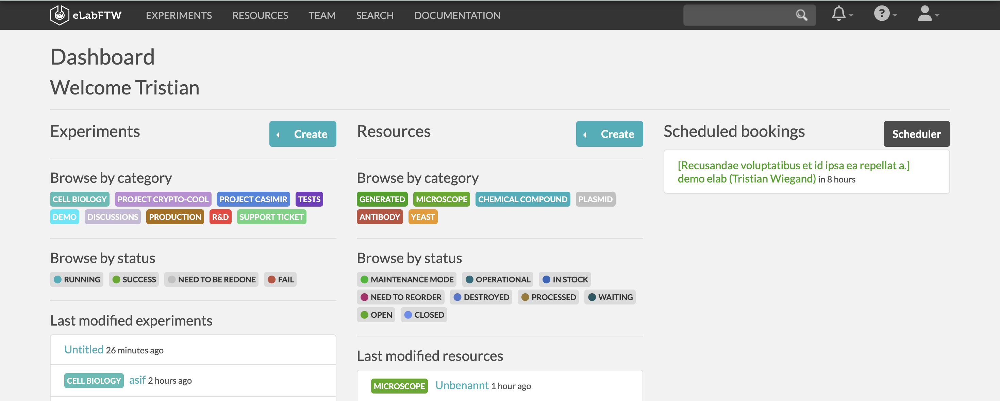
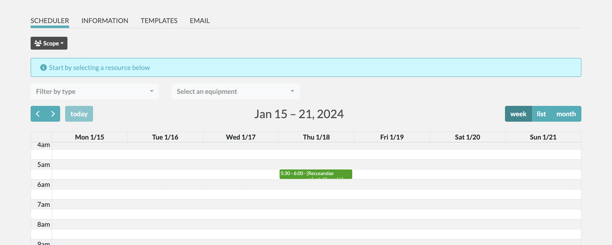
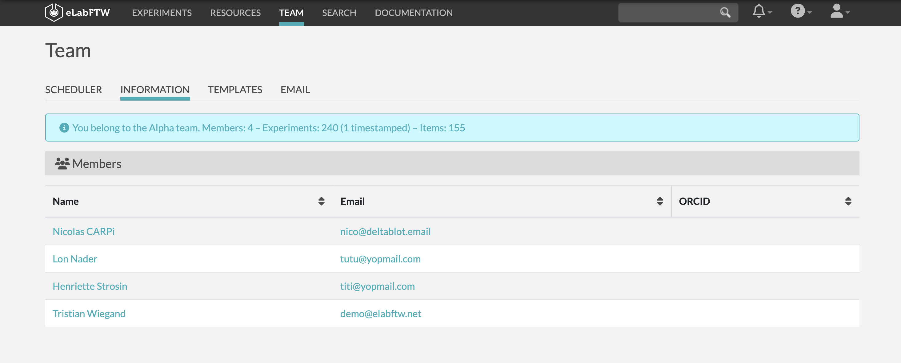
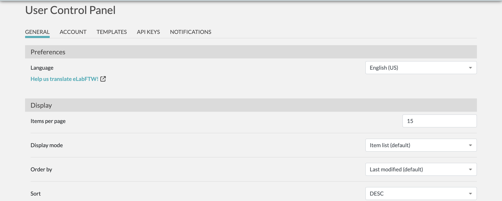

Web Engineering Seminar in the Winter Semester 2023
Research Data Management in the Context of Electronic Laboratory Notebooks
Utkarsh Yadav
Sindhura Sivaprasad
Technische Universität Chemnitz
Chemnitz, Germany
1. Introduction [Written by Utkarsh Yadav]
Research data management (RDM) involves the organization, storage, and preservation of data generated during
research. It ensures data integrity, accessibility, and compliance with ethical and legal standards.
RDM includes data collection, documentation, sharing and long-term storage.
Researchers use systematic strategies to manage data throughout their lifecycle, improving reproducibility
and collaboration. Good RDM promotes transparency and facilitates validation of research results, promoting
a structured approach to processing valuable information. [1]
According to Lass, the demand created by collaborative work is hindered by the functionality of paper
notebooks. Sharing information recorded in a separate notebook requires the scientist to copy that
information and send it to the requesting scientist. This takes time, effort and distracts the scientist
from his main work. It also creates problems for scientists in receiving and using information. It is
difficult to record and maintain an audit trail of the information contained in copied pages. [2]
In the context of the Electronic Laboratory Notebook (ELN), research data management (RDM) is seamlessly
integrated.
ELN provides a digital platform for scientists to record, organize and share their data and experimental
results. RDM in ELN ensures systematic data processing throughout the research lifecycle, from data entry to
sharing
and archiving. ELN streamlines collaboration, improves reproducibility, and promotes efficient data
organization.
Researchers benefit from a unified platform that not only makes it easy to record experimental details, but
also ensures data is properly managed, improving overall research efficiency and traceability origins of
scientific work.
2. Overview of ELN [Written by Utkarsh Yadav]
Electronic Laboratory Notebooks (ELNs) are software programs that are used to store, organize, and manage
laboratory data. They are designed to replace traditional paper laboratory notebooks and offer a number of
advantages such as Seamless management of data, Collaboration, Workflow optimization, Reuse of research
data.
[6].
2.1 Motivation
The 'motivation' for Electronic Laboratory Notebooks (ELNs) arises from addressing limitations in
traditional paper
notebooks. Paper records pose challenges in organization, retrieval, and susceptibility to damage. ELNs, a
digital solution, offer easy data management, searchability, and sharing. This transition enhances research
efficiency, safeguards against data loss, and fosters collaborative scientific record-keeping.
2.2 Principles
Based on the principles of digitization, ELN goes beyond the limitations of traditional paper. Based on
digital records management, ELN emphasizes seamless organization, retrieval, and secure data sharing. The
search function is intended for quick access to information. Following the principles of shareable datasets,
ELNs improve collaboration, ensure integrity and transparency, and are the basis for modern data management.
2.3 Applicability
ELNs have versatile applications in a variety of industries, including pharmaceutical and chemical research,
materials science, environmental science, food science, and clinical research. The company's digital
platform streamlines data management to ensure efficiency, collaboration, and compliance across a variety of
scientific endeavors. ELNs serve as important tools to improve productivity and advance research practices.
2. Goals & Objectives [Written by Utkarsh Yadav]
The objectives of ELNs are as follows:
2.1 Improve Efficiency and Productivity
ELNs aim to streamline lab workflows by minimizing manual data tasks. Automation optimizes experiments,
boosting
efficiency. Quick, organized data access in ELNs enhances overall research productivity.
2.2 Enhance Quality and Reproducibility
ELNs prioritize standardized data entry to minimize errors and ensure accuracy. Comprehensive documentation
fosters experiment reproducibility, and version tracking adds transparency, maintaining research record
integrity.
2.3 Reduce Risk of Data Loss or Corruption
ELNs use digital storage to protect against physical damage or loss of paper records. Regular backups and
secure
data systems mitigate risks of corruption or loss. Encryption and data integrity checks enhance the
protection
of valuable research data.
2.4 Facilitate Sharing and Collaboration
ELNs offer secure data-sharing platforms, promoting collaboration. Real-time features enable simultaneous
project work, fostering a collaborative research environment. Enhanced accessibility ensures seamless
sharing,
contributing to collaborative research success.
2.5 Comply with Regulatory Requirements
ELNs provide tools for thorough, audit-ready records, ensuring regulatory compliance. Integrated compliance
features align with industry regulations. Electronic signatures and secure access contribute to meeting
regulatory requirements, reinforcing reliability and compliance in ELNs.
3. Types of ELN. [Written
by Sindura Sivaprasad]
ELNs can be broadly divided into 2 categories based on their applicability. Specific ELNs are tailored to meet the unique
needs of the specific fields such as chemistry, biology etc.. Its custom features and templates streamline workflows and
ensure seamless integration of data from specialized instruments. On the other hand, a generic or cross-disciplinary ELN
provides a versatile platform for interdisciplinary collaboration, recording all lab notebook data and facilitating seamless
integration across diverse scientific domains.
4. Factors Affecting Choice of ELN. [Written by Sindura Shivaprasad]
Several factors influence the selection of an Electronic Laboratory Notebook (ELN), and these considerations vary based on the
specific needs and goals of the researchers or organizations. Here are some key factors that commonly affect the choice of ELN:
4.1 Nature of Research
For research primarily involving specific applications, instruments, or data types within a single scientific field, a specific ELN
is preferred. In contrast, a cross-disciplinary ELN is more suitable for research spanning multiple scientific fields or technologies,
offering greater flexibility.
4.2 Collaborative Requirements
If collaborative needs are specific to particular scientific fields, a specialized ELN may be chosen. On the other hand, if the research
involves sharing and integrating diverse data across various scientific domains, a cross-disciplinary ELN provides the necessary flexibility.
4.3 Customization Needs
Consideration of customization needs is crucial. While specific ELNs may have limited customization due to their focused nature,
cross-disciplinary ELNs offer more options for integration and flexibility.
4.4 Data Integration
Specific ELNs make data integration easier due to uniform data types and less risk associated with measurements within a particular
scientific discipline. Cross-disciplinary ELNs, while encouraging collaboration, require meticulous data maintenance and may involve
complex database designs to handle diverse data from multiple sources.
5. Challenges managing interdisciplinary reasearch data
[Written by Utkarh Yadav]
5.1 Research Landscape.
Navigating the research environment poses significant challenges, especially in effectively managing data shared
between disciplines involved in collaborative environmental research.
Fragmented research areas make it difficult to integrate different methods and terminology, preventing seamless
collaborative data management.
[6].
5.2 Attitudes and Experience.
In the field of attitudes and experiences, interdisciplinary research opens up different perspectives on how to
work with data. It is like a mix of different flavors, and each researcher are accustomed to a unique approach.
Data management in this context is like juggling different preferences, turning individual inputs into
collaborative challenges with a special twist. Establishing standardized protocols is essential to accommodate
this diversity.[6].
5.3 Data Complexity.
The complexity of data further compounds challenges in interdisciplinary research. The extensive variety of data
types adds layers of intricacy to collaborative data management efforts. Striking a balance between different
data formats and ensuring coherence in analysis become critical tasks.[6].
5.4 long-term preservation of data.
Long-term data retention in collaborative research presents challenges, exacerbated by strict open access
requirements from funding agencies and publishers.
Effectively maintaining compliant digital records while ensuring continued accessibility can be a delicate
task.[6].
5.5 Repository Decisions.
Choosing the right data repository can be difficult in collaborative research, requiring researchers to choose
the right storage and coordinate data transfer, much like choosing a bookshelf.
This process is critical to effective collaborative data management.[6].
6.Overcoming Challenges in Cross-disciplinary ELNs [Written by Sindhura Shivaprasad]
A comprehensive and thoughtful approach to addressing various challenges in the research landscape,
especially in the context of interdisciplinary research is very much needed. Below points gives the
outlined strategies to the same.
6.1 Flexible Research Data Management (RDM) Framework
Establishing a flexible RDM framework promotes efficient data and metadata sharing among project researchers,
reducing the effort required for data management. This helps streamline workflows and enhance collaboration.
6.2 Common Taxonomy for Overcoming Attitudes and Experience Variances
Creating a common taxonomy agreed upon by all researchers helps categorize and organize diverse data types,
overcoming variations in attitudes and experiences. This common understanding facilitates more effective communication and collaboration.
6.3 Centralized Storage System for Data Complexity
Implementing a centralized storage system for researchers to transfer metadata files and corresponding data addresses the challenge of data
complexity. This ensures a centralized and organized repository, simplifying data access and management.
6.4 Controlled Vocabularies and Metadata Creation Process
Utilizing controlled vocabularies or pick lists for specific metadata keys ensures consistency and accuracy. Implementing a structured process
for metadata creation, where researchers upload files into a centralized database, enhances data quality.
6.5 Ensuring Long-Term Preservation
Establishing a regular review process for updating metadata ensures its relevance and compliance with evolving standards. Regular involvement of
researchers in reviewing and updating metadata contributes to the long-term preservation of data.
6.6 Efficient Repository Management
Enabling efficient data sharing through a centralized storage system and encouraging the use of standardized templates simplifies data transfer and
enhances collaboration. Efficient repository management is crucial for seamless data exchange among researchers.
7. ELN Eradicating Invasivness in (RDM)
[Written by Utkarh Yadav]
7.1 User-Friendly Interfaces.
Design ELN interfaces that are intuitive and user-friendly, minimizing disruptions to researchers' workflows and
reducing the perception of invasiveness.
[6].
7.2 Customizable Access Controls.
Implement customizable access controls to allow researchers to manage who can view, edit, or contribute to
specific sections of the ELN. This ensures that sensitive information is only accessible to authorized
individuals. [6].
7.3 Transparent Data Handling Policies.
Clearly communicate data handling policies within the ELN to make researchers aware of how their data is
managed, shared, and stored. Transparency helps build trust and reduces concerns about invasiveness.
[6].
7.4 Opt-In Collaboration Features.
Provide opt-in features for collaboration, allowing researchers to choose when and how they share their data.
This approach respects the autonomy of researchers and minimizes perceived invasiveness.[6].
7.5 End-User Training.
Offer comprehensive training for end-users to familiarize them with the ELN interface and features. A
well-trained user is more likely to navigate the system efficiently, reducing the potential for frustration and
perceived invasiveness.
[6].
7.6 Data Ownership and Control.
Clearly define data ownership and control policies within the ELN, emphasizing that researchers retain control
over their data. This helps alleviate concerns about loss of control and invasiveness.
[6].
7.7 Integration Flexibility.
Provide flexibility in integrating ELNs with existing workflows and systems. This ensures that researchers can
seamlessly incorporate ELNs into their processes, minimizing disruptions and the feeling of invasiveness.
[6].
7.8 Responsive Support and Feedback Channels.
Establish responsive support channels and feedback mechanisms within the ELN platform. This allows researchers
to address concerns promptly and provides a channel for continuous improvement, reducing perceived invasiveness
over time.
[6].
7.9 Consent Mechanisms.
Implement consent mechanisms for specific data-sharing activities. Researchers should have the ability to
provide explicit consent before certain actions, adding a layer of control and reducing the sense of
invasiveness.
[6].
7.10 Regular Updates and Improvements.
Continuously update and improve the ELN platform based on user feedback and evolving research needs. Regular
updates demonstrate a commitment to addressing concerns and enhancing user experience, mitigating perceived
invasiveness.
[6].
8. Tools and Frameworks for ELN [Written by Utkarsh Yadav]
8.1 OpenBIS (Open Biological Information System)
The openBIS is an open-source platform that provides an ELN and a Laboratory Information Management System
for academic life science laboratories. It offers a solution for linking and retrieving experimental details
and results, which is often problematic when using paper notebooks. It also allows the storage and easy
accessibility of all data in a single place, speeding up work and facilitating data retrieval in the
laboratory.
Figure 1: Integrating data from different sources to OpenBIS DB.
[2]
Researchers can efficiently document their work, describe materials and methods, and collect raw and
analyzed data using the user-friendly web interface.
8.1.1 Key Features of OpenBIS
8.1.1.1 Efficient documentation
openBIS allows researchers to efficiently document their work. Researcher can describe materials and methods
used and also collect raw and analyzed data, providing a comprehensive way of record keeping[6].
8.1.1.2 User-friendly interface
The OPENBIS system boasts a user-friendly web interface, empowering researchers to seamlessly execute operations
like adding, editing, browsing, and searching data. This accessibility ensures convenience in information
retrieval, contributing to a user-friendly research environment[6].
8.1.1.3 Centralized data storage
The centralized data storage feature accelerates work processes and expedites data retrieval. This not only
ensures organized data but also enhances overall accessibility, promoting efficiency in research activities[6].
8.1.1.4 Customization and extension
openBIS allows for platform customization and extension, offering the flexibility to integrate additional
functionalities. This includes the incorporation of features like report generation or the integration of other
openBIS extensions. This adaptability enhances the platform's capabilities, catering to diverse research needs[6].
8.2 eCAT ELN
Developed by Axiope Limited, a pioneering effort in the realm of Electronic Laboratory Notebooks (ELNs)
emerged for researchers in non-commercial institutions. This ELN, the inaugural of its kind, was
meticulously crafted in close collaboration with laboratory scientists. Marked by its high scalability, the
web-based ELN incorporates advanced collaborative features, providing a versatile and efficient platform
tailored to the evolving needs of scientific research.
Figure 2: Ecat comparison to other alternatives.
[2]
8.2.1 Key Features of ECAT
8.2.1.1 Permission System.
eCAT incorporates a robust permission system, allowing precise control over data access. This ensures that users have the appropriate permissions, maintaining the confidentiality and integrity of research data[6].
8.2.1.2 Controlled Sharing.
A distinctive feature of eCAT is its controlled sharing functionality, enabling researchers to share data selectively. This ensures that sensitive information is shared only with authorized individuals, fostering collaboration while safeguarding data security[6].
8.2.1.3 Audit Trail.
eCAT maintains a thorough audit trail, providing a detailed record of all activities within the system. This transparency enhances accountability, enabling researchers to track changes, additions, or deletions made to the data, thus ensuring data integrity[6].
8.2.1.4 Electronic Signature
Offering electronic signature capabilities, eCAT ensures the authenticity and legality of data entries. This feature is crucial for meeting regulatory requirements and validating the integrity of the research data recorded in the system[6].
8.2.1.5 Search Functionalities
eCAT's search functionalities provide a powerful tool for researchers to retrieve specific information swiftly. This feature enhances efficiency in data retrieval, contributing to streamlined research workflows and facilitating easy access to relevant data[6].
9. Demo [Written by Sindhura Shivaprasad]
After considering diffrent types of ELNs and existing tools and frameworks, in the demo point of view , a cross-disciplinary ELN called "elabFTW" was more convenient to use for demo and was close to ideal tool where it satisfied most of the features
of an ideal ELN.

Figure 3: Demo Website Screenshots
9.1 Terminologies
9.1.1 Experiments and Resources
The experiments tab in the Electronic Laboratory Notebook (ELN) offers personalized viewing, allowing users to focus on their experiments. It supports the creation of customized experiments with details such as title, status, and permissions. Users can
add descriptions, extra fields, and dependencies, while attaching files and performing molecular editing. Management features include copying, timestamping, exporting, and pinning experiments. Advanced options like blockchain timestamps, archiving, and
soft delete ensure data integrity. Users can filter, sort, and view experiments in tabular or regular format, fostering efficient organization and collaboration in research projects.
On the other hand In the Electronic Laboratory Notebook (ELN), resource management falls under the purview of the team admin. Admins can make resources bookable by adjusting parameters, facilitating efficient scheduling. While resources operate similarly
to experiments, they lack timestamping, focusing more on tracking and scheduling without specific time references. This allows streamlined management of team resources within the ELN.
Figure 4:Experiments and Resources
9.1.2 Scheduler and Teams
The Scheduler in the Electronic Laboratory Notebook (ELN) allows for efficient resource management. Users can schedule resources based on specific requirements, either by considering scheduling parameters or directly on the Teams tab. Flexibility is provided through
the ability to edit scheduled events by binding experiments or resources. Additionally, users can cancel events with prior notification to team members, providing effective communication and coordination within the team.
The Team tab in the Electronic Laboratory Notebook (ELN) offers a snapshot of team composition and experiment statistics. Experiment Templates provide a quick reference for predefined setups, while the Email tab streamlines team communication within the ELN.


Figure 5:Scheduler and Team
9.1.3 User Control Panel
The User Panel in the Electronic Laboratory Notebook (ELN) provides users with three essential tabs:
The Preferences tab allows for customization of the ELN interface, including language, display settings,
and default permissions. The Account tab offers security management options such as password changes and Multi-Factor Authentication through recommended applications. In the Template tab, users can efficiently manage experiment templates, optimizing the experiment creation process.

Figure 6: User Control Panel
10. Future Improvements [Written by Sindhura Shivaprasad]
After evaluating existing tools, we have identified crucial improvements for our platform. These include implementing visible versioning alongside timestamping to enhance transparency and aid in error correction. Additionally, a robust review system is proposed to scrutinize contributions
before publication, reducing the risk of false data and elevating overall data quality. Furthermore, expanding real-time support for a variety of media files is recommended, enhancing reporting capabilities and facilitating cross-domain research on the platform. These improvements collectively
aim to create a more efficient and reliable research tool.
10. Conclusion [Written by Sindhura Shivaprasad]
The transition "From paper to pixels: Electronic Lab Notebooks revolutionizing the way we record, share, and advance scientific knowledge" represents a pivotal shift in the realm of research documentation. Electronic Lab Notebooks (ELNs) have emerged as indispensable tools, addressing diverse
research needs with unparalleled efficiency. Their digital interface not only streamlines data management but also facilitates seamless interdisciplinary collaboration, breaking down traditional silos and fostering a more integrated approach to scientific exploration. ELNs offer researchers the
flexibility to adapt and extend their tools, ensuring compatibility with evolving technological landscapes, thereby promising a dynamic and responsive future for scientific endeavors.
The potential for tool extension within ELNs holds particular significance, as it opens avenues for innovation and customization tailored to specific research requirements. This adaptability not only enhances the utility of ELNs but also positions them as catalysts for scientific progress.
In essence, the trajectory "From paper to pixels" signifies not just a transition in recording methods but a transformative evolution that propels scientific knowledge-sharing into a more accessible, collaborative, and promising future.
10. References
[1] Surkis A, Read K. Research data management. J Med Libr Assoc. 2015
Jul;103(3):154-6.
doi:
10.3163/1536-5050.103.3.011 PMID: 26213510; PMCID: PMC4511058.
[3] C. M. Gray, Y. Kou, B. Battles, J. Hoggatt, and A. L. Toombs, “The Dark
(Patterns) Side of UX Design,” Proceedings of the 2018 CHI Conference on Human Factors in Computing Systems
- CHI ’18, pp. 1–14, 2018 doi:
https://doi.org/10.1145/3173574.3174108
[4] M. Nouwens, I. Liccardi, M. Veale, D. Karger, and L. Kagal, “Dark
Patterns
after the GDPR: Scraping Consent Pop-ups and Demonstrating their Influence,” 2020,
doi:
https://doi.org/10.1145/3313831.3376321
[5] A. M. Bhoot, M. A. Shinde, and W. P. Mishra, “Towards the Identification
of
Dark
Patterns: An Analysis Based on End-User Reactions,” IndiaHCI ’20: Proceedings of the 11th Indian Conference
on
Human-Computer Interaction, Nov. 2020.
doi: https://doi.org/10.1145/3429290.3429293
[6] Arunesh Mathur, Mihir Kshirsagar, and Jonathan Mayer. 2021. What Makes a
Dark
Pattern... Dark? Design Attributes,
Normative Considerations, and Measurement Methods https://doi.org/10.1145/3411764.3445610